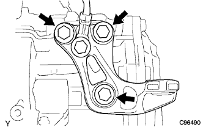
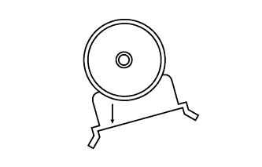

エンジンマウンティング インシュレータ LH（1NZ-FE(4WD)） 取り付け |
| 1. エンジンマウンティング インシュレータ LH取り付け |
|  |
ボルト3本で、エンジンマウンティングインシュレータLHを取り付ける。
アースボルトを取り付ける。
 |
ジャッキを操作して、ボルト2本を取り付ける。
| 2. エンジンマウンティング ブラケット LH取り付け |
 |
ボルトで、エンジンマウンティングブラケットLHを取り付ける。
|  |
エンジンマウンティングブラケットの矢印が下向きの状態で取り付いていることを確認する。
| 3. エンジンアンダ カバー LH取り付け |
スクリュー2個およびボルト2本で、エンジンアンダカバーLHを取り付ける。